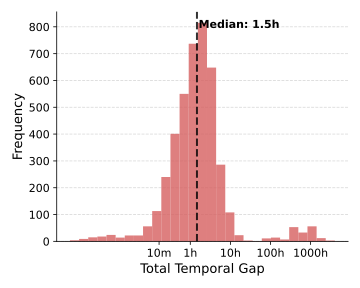
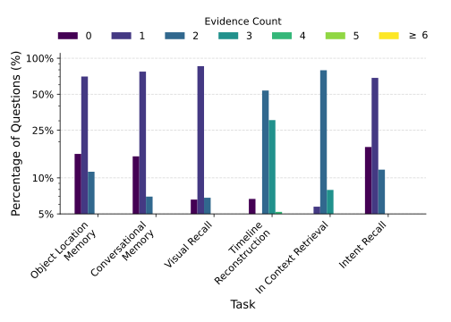
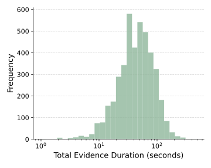
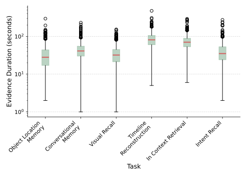

Egocentric VQA for long-horizon AR memory
SuperMemory-VQA
An egocentric visual question-answering benchmark for practical, long-horizon memory.
The Ohio State University | Meta

Dataset collection and experiments were conducted by OSU researchers following an IRB-reviewed protocol.
Abstract
Augmented reality glasses present a compelling platform for AI agents to serve as personalized memory assistants. SuperMemory-VQA evaluates whether such systems can answer realistic memory questions from long, multimodal egocentric recordings rather than short isolated clips.
The dataset contains 52.9 hours of everyday activities recorded with AR glasses, including synchronized RGB video, audio transcription, eye gaze, IMU, and SLAM trajectories. A human-verified annotation pipeline yields 4,853 grounded question-answer pairs spanning object and location memory, intent recall, visual scene recall, timeline reconstruction, conversational memory, and in-context retrieval.
Dataset
Memory questions grounded in everyday life
SuperMemory-VQA targets questions people might actually ask an AR memory assistant: where an object was left, what someone said in conversation, whether an intended action happened, or how events unfolded across time.
The benchmark stresses natural phrasing, long-horizon context, dense multi-evidence retrieval, multimodal grounding, and hallucination robustness through ordered multiple-choice answers that include an explicit unanswerable option.

Object & Location Memory
Recover the last known location and trajectory of objects across time and rooms.
Conversational Memory
Recall spoken facts, commitments, deferred answers, and mid-conversation corrections.
Visual Scene Recall
Retrieve visual details such as text, screens, ingredients, manuals, and scene contents.
In-Context Retrieval
Combine current context with earlier facts and associations in the recording history.
Timeline Reconstruction
Sequence events chronologically and reason over how actions unfolded.
Intent Recall
Recover stated or implied goals, reminders, and intended future actions.

Annotation Pipeline
Scalable generation with human verification
An agentic system drafts grounded descriptions and question-answer pairs from continuous egocentric video. Automated checks and human review refine the final benchmark, preserving evidence spans and answerability labels.


Statistics
Long horizons and multi-evidence reasoning




Benchmarking Results
Current systems remain far from reliable
Even the strongest configuration, Gemini-3-Flash with Video-RAG, reaches only 61.0% QA accuracy. The gap between answerability detection and correct answer selection shows that retrieval, multimodal grounding, and evidence sufficiency remain open challenges.
| Model | Video-RAG | EgoButler | ||||
|---|---|---|---|---|---|---|
| Ans-F1 | Acc. | MRR | Ans-F1 | Acc. | MRR | |
| Open-source models | ||||||
| Qwen-3-VL 8B | 75.0 | 41.8 | 63.8 | 44.5 | 38.8 | 61.0 |
| Qwen-3-VL 30B | 56.6 | 45.5 | 65.7 | 44.2 | 39.1 | 61.8 |
| InternVL-3.5 8B | 81.7 | 41.0 | 63.3 | 61.4 | 39.8 | 61.8 |
| InternVL-3.5 30B | 77.7 | 42.3 | 63.7 | 28.5 | 27.3 | 53.4 |
| Gemma-4-E4B IT | 40.3 | 35.3 | 58.2 | 30.9 | 36.4 | 58.2 |
| Gemma-4 31B | 67.2 | 45.6 | 65.5 | 43.9 | 41.5 | 62.2 |
| Closed-source models | ||||||
| Gemini-3-Flash | 83.9 | 61.0 | 76.0 | 71.2 | 54.1 | 71.6 |
| Gemini-3.1-Pro | 67.4 | 53.2 | 70.7 | 43.5 | 42.6 | 64.2 |
| GPT-5.4-mini | 77.6 | 47.8 | 67.4 | 75.0 | 46.0 | 66.1 |
| GPT-5.4 | 78.3 | 52.3 | 69.5 | 71.7 | 48.0 | 67.2 |


Citation
@article{alam2026supermemoryvqa,
title = {SuperMemory-VQA: An Egocentric Visual Question-Answering Benchmark for Long-Horizon Memory},
author = {Alam, Samiul and Siam, Shakhrul Iman and Proulx, Michael J. and Fort, James and Newcombe, Richard and Kim, Hyo Jin and Zhang, Mi},
year = {2026},
journal = {arXiv preprint}
}